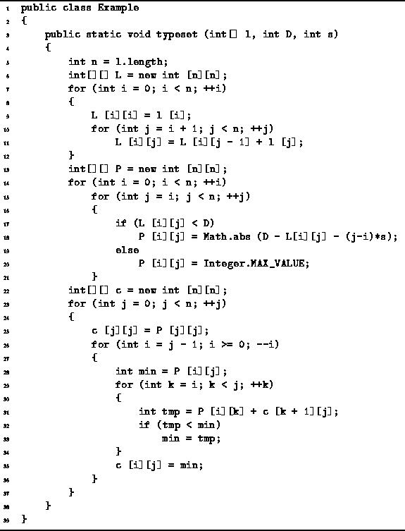
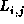

Data Structures and Algorithms
with Object-Oriented Design Patterns in Java
Data Structures and Algorithms
with Object-Oriented Design Patterns in Java
Program  defines the method typeset
which takes three arguments.
The first, l, is an array of n integers that
gives the lengths of the words in the sequence to be typeset.
The second, D, specifies the desired paragraph width
and the third, s, specifies the normal inter-word space.
defines the method typeset
which takes three arguments.
The first, l, is an array of n integers that
gives the lengths of the words in the sequence to be typeset.
The second, D, specifies the desired paragraph width
and the third, s, specifies the normal inter-word space.

Program: Dynamic programming example--typesetting a paragraph.
The method first computes the lengths, ,
of all possible subsequences (lines 6-12).
This is done by using the dynamic programming paradigm
to evaluate the recursive definition of
given in Equation .
The running time for this computation is clearly  .
.
The next step computes the one-line penalties  as given by Equation (lines 13-21).
This calculation is a straightforward one
and its running time is also
as given by Equation (lines 13-21).
This calculation is a straightforward one
and its running time is also  .
.
Finally, the minimum total costs,  ,
of typesetting each subsequence are determined
for all possible subsequences (lines 22-37).
Again we make use of the dynamic programming paradigm
to evaluate the recursive definition of
,
of typesetting each subsequence are determined
for all possible subsequences (lines 22-37).
Again we make use of the dynamic programming paradigm
to evaluate the recursive definition of  given in Equation .
The running time for this computation is
given in Equation .
The running time for this computation is  .
As a result, the overall running time required to
determine the best way to typeset a paragraph of n words is
.
As a result, the overall running time required to
determine the best way to typeset a paragraph of n words is  .
.
 Copyright © 1998 by Bruno R. Preiss, P.Eng. All rights reserved.
Copyright © 1998 by Bruno R. Preiss, P.Eng. All rights reserved.